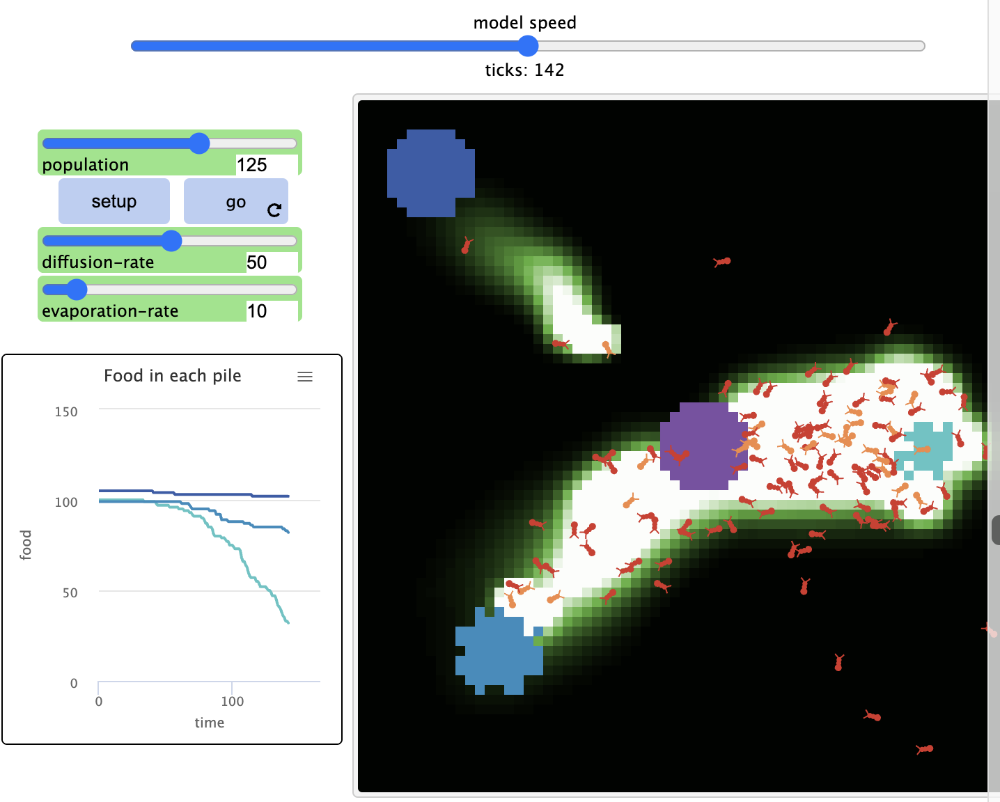
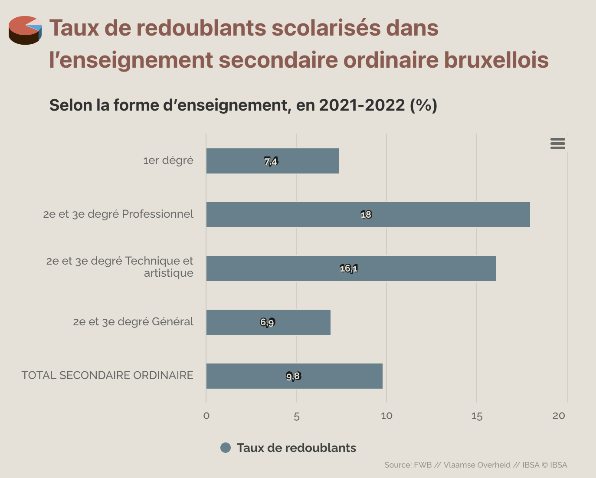
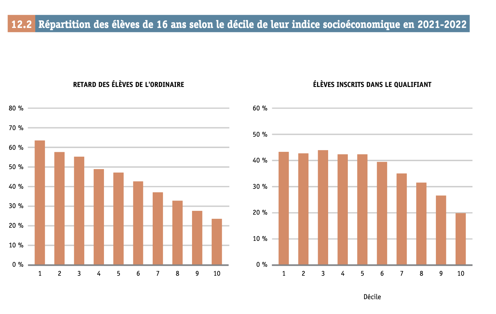

<!DOCTYPE html>
<html lang="en">
  <head>
    <meta charset="utf-8" />
    <meta name="viewport" content="width=device-width, initial-scale=1.0, maximum-scale=1.0, user-scalable=no" />

    <title></title>
    <link rel="stylesheet" href="dist/reveal.css" />
    <link rel="stylesheet" href="dist/theme/serif.css" id="theme" />
    <link rel="stylesheet" href="plugin/highlight/zenburn.css" />
	<link rel="stylesheet" href="css/layout.css" />
	<link rel="stylesheet" href="plugin/customcontrols/style.css">
	<link rel="stylesheet" href="plugin/chalkboard/style.css">


    <script defer src="dist/fontawesome/all.min.js"></script>

	<script type="text/javascript">
		var forgetPop = true;
		function onPopState(event) {
			if(forgetPop){
				forgetPop = false;
			} else {
				parent.postMessage(event.target.location.href, "app://obsidian.md");
			}
        }
		window.onpopstate = onPopState;
		window.onmessage = event => {
			if(event.data == "reload"){
				window.document.location.reload();
			}
			forgetPop = true;
		}

		function fitElements(){
			const itemsToFit = document.getElementsByClassName('fitText');
			for (const item in itemsToFit) {
				if (Object.hasOwnProperty.call(itemsToFit, item)) {
					var element = itemsToFit[item];
					fitElement(element,1, 1000);
					element.classList.remove('fitText');
				}
			}
		}

		function fitElement(element, start, end){

			let size = (end + start) / 2;
			element.style.fontSize = `${size}px`;

			if(Math.abs(start - end) < 1){
				while(element.scrollHeight > element.offsetHeight){
					size--;
					element.style.fontSize = `${size}px`;
				}
				return;
			}

			if(element.scrollHeight > element.offsetHeight){
				fitElement(element, start, size);
			} else {
				fitElement(element, size, end);
			}		
		}


		document.onreadystatechange = () => {
			fitElements();
			if (document.readyState === 'complete') {
				if (window.location.href.indexOf("?export") != -1){
					parent.postMessage(event.target.location.href, "app://obsidian.md");
				}
				if (window.location.href.indexOf("print-pdf") != -1){
					let stateCheck = setInterval(() => {
						clearInterval(stateCheck);
						window.print();
					}, 250);
				}
			}
	};


        </script>
  </head>
  <body>
    <div class="reveal">
      <div class="slides"><section  data-markdown><script type="text/template"><!-- .slide: class="drop" -->
<div class="" style="position: absolute; left: 0px; top: 0px; height: 700px; width: 960px; min-height: 700px; display: flex; flex-direction: column; align-items: center; justify-content: center" absolute="true">

## Analyse des systèmes éducatifs

#### Modéliser et simuler un système éducatif 
##### Partie 3 - Des phénomènes macro aux comportements micro
<small>Ou comment décortiquer les inégalités dans le système éducatif

Nathanaël Friant

2024-2025</small>
</div></script></section><section  data-markdown><script type="text/template"><!-- .slide: class="drop" -->
<div class="" style="position: absolute; left: 0px; top: 0px; height: 700px; width: 960px; min-height: 700px; display: flex; flex-direction: column; align-items: center; justify-content: center" absolute="true">

### Rappel du cours précédent

- **Modélisation multi-agents** : règles simples → comportements complexes
- **Émergence** : phénomènes collectifs sans contrôle central
- **Exemples** : fourmis, feux de forêt, oiseaux en vol groupé




<aside class="notes"><p>La dernière fois, nous avons découvert comment des règles simples au niveau individuel peuvent créer des comportements complexes au niveau collectif. </p>
<p>Demande: rappeler ce qu&#39;est l&#39;émergence dans un système complexe ?</p>
</div></aside></script></section><section  data-markdown><script type="text/template"><!-- .slide: class="drop" -->
<div class="" style="position: absolute; left: 0px; top: 0px; height: 700px; width: 960px; min-height: 700px; display: flex; flex-direction: column; align-items: center; justify-content: center" absolute="true">

### Exemple : Les fourmis

- Règles individuelles simples :
  - Chercher de la nourriture
  - Déposer des phéromones en revenant au nid
  - Suivre les traces de phéromones

- Émergence :
  - Chemins optimaux vers la nourriture
  - Exploitation efficace des ressources

<aside class="notes"><p>Souvenez-vous de l&#39;exemple des fourmis - sans aucune planification centrale, elles trouvent les chemins optimaux vers la nourriture. C&#39;est un exemple parfait d&#39;émergence.</p>
</div></aside></script></section><section  data-markdown><script type="text/template"><!-- .slide: class="drop" -->
<div class="" style="position: absolute; left: 0px; top: 0px; height: 700px; width: 960px; min-height: 700px; display: flex; flex-direction: column; align-items: center; justify-content: center" absolute="true">

### Inverser notre approche

<div style="display: flex; justify-content: space-around; align-items: center; height: 400px;">
<div style="text-align: center;">
<h4>Cours précédent</h4>
<span style="font-size: 60px;">↓</span><br>
<span style="font-weight: bold;">Règles individuelles</span><br>
<span style="font-size: 60px;">↓</span><br>
<span>Phénomènes émergents</span>
</div>
<div style="text-align: center;">
<h4>Aujourd'hui</h4>
<span>Phénomènes observés</span><br>
<span style="font-size: 60px;">↓</span><br>
<span style="font-weight: bold;">Mécanismes individuels ?</span><br>
<span style="font-size: 60px;">↓</span><br>
<span>Règles à modéliser</span>
</div>
</div>

<aside class="notes"><p>Aujourd&#39;hui, nous allons faire l&#39;inverse de ce que nous avons fait jusqu&#39;à présent. Au lieu de partir des règles pour voir ce qui émerge, nous partirons des phénomènes observés dans les systèmes éducatifs pour tenter de comprendre quelles règles individuelles pourraient les produire.</p>
<p>C&#39;est intéressant de fonctionner comme cela, car vous allez être obligés de vous renseigner sur ce que l&#39;on connaît du fonctionnement des individus. Comment font-ils leurs choix? Qu&#39;est-ce qui les influence, les &quot;détermine&quot; ou non, quelle liberté ont-ils? Comment voient-ils le monde?</p>
</div></aside></script></section><section  data-markdown><script type="text/template"><!-- .slide: class="drop" -->
<div class="" style="position: absolute; left: 0px; top: 0px; height: 700px; width: 960px; min-height: 700px; display: flex; flex-direction: column; align-items: center; justify-content: center" absolute="true">

### Un paradoxe des systèmes éducatifs

<div style="text-align: center; font-size: 26px; font-style: italic; margin: 50px;">
"Comment un système conçu pour offrir des chances égales à tous<br>produit-il systématiquement des inégalités de parcours et de résultats ?"
</div>

<aside class="notes"><p>Voici la question centrale qui va nous occuper. Prenez 30 secondes pour y réfléchir. Quelles pourraient être les causes de ce paradoxe?</p>
</div></aside></script></section><section  data-markdown><script type="text/template"><!-- .slide: class="drop" -->
<div class="" style="position: absolute; left: 0px; top: 0px; height: 700px; width: 960px; min-height: 700px; display: flex; flex-direction: column; align-items: center; justify-content: center" absolute="true">

### Les acteurs du système éducatif

<div style="display: flex; justify-content: space-around; align-items: center; height: 400px;">
<div>
<h4>Quels sont les agents ?</h4>
<ul>
<li>Élèves</li>
<li>Parents</li>
<li>Enseignants</li>
<li>Directions d'école</li>
<li>Pouvoirs organisateurs</li>
<li>Décideurs politiques</li>
</ul>
</div>
<div>
<h4>Quelles décisions prennent-ils ?</h4>
<ul>
<li>Choix d'école</li>
<li>Évaluation des élèves</li>
<li>Orientation scolaire</li>
<li>Redoublement</li>
<li>Politiques d'admission</li>
<li>...</li>
</ul>
</div>
</div>

<aside class="notes"><p>Prenons un moment pour identifier les acteurs qui interagissent dans le système éducatif. Quelles autres décisions pouvez-vous imaginer pour chacun de ces agents?</p>
</div></aside></script></section><section  data-markdown><script type="text/template"><!-- .slide: class="drop" -->
<div class="" style="position: absolute; left: 0px; top: 0px; height: 700px; width: 960px; min-height: 700px; display: flex; flex-direction: column; align-items: center; justify-content: center" absolute="true">

### Objectifs du cours d'aujourd'hui

1. **Identifier** les principaux phénomènes d'inégalités dans le système éducatif belge francophone

2. **Décomposer** ces phénomènes en mécanismes et décisions au niveau individuel

3. **Réfléchir** aux règles qui pourraient être modélisées dans une simulation

<aside class="notes"><p>Nous allons procéder en trois étapes. D&#39;abord, observer les grandes tendances d&#39;inégalités scolaires. Ensuite, essayer de comprendre quels comportements individuels pourraient créer ces inégalités. Enfin, réfléchir à comment modéliser ces comportements.</p>
</div></aside></script></section><section  data-markdown><script type="text/template"><!-- .slide: class="drop" -->
<div class="" style="position: absolute; left: 0px; top: 0px; height: 700px; width: 960px; min-height: 700px; display: flex; flex-direction: column; align-items: center; justify-content: center" absolute="true">

### Un exercice de détective

<div style="text-align: center; font-size: 24px; margin: 30px;">
<p>Des <span style="color: #b30000; font-weight: bold;">phénomènes observés</span> aux <span style="color: #00608d; font-weight: bold;">causes sous-jacentes</span></p>

<p style="margin-top: 40px;">Quelles "règles" créent les inégalités que nous observons ?</p>
</div>

<aside class="notes"><p>C&#39;est un peu comme un travail de détective : nous avons les conséquences (les inégalités), et nous devons retrouver les causes. Des questions avant de commencer ?</p>
</div></aside></script></section><section  data-markdown><script type="text/template"><!-- .slide: class="drop" -->
<div class="" style="position: absolute; left: 0px; top: 0px; height: 700px; width: 960px; min-height: 700px; display: flex; flex-direction: column; align-items: center; justify-content: center" absolute="true">

## La ségrégation scolaire

### État des lieux en Belgique francophone

<aside class="notes"><p>Comme nous l&#39;avons déjà abordé dans d&#39;autres cours, la ségrégation scolaire est un phénomène majeur dans notre système éducatif. Faisons un rapide état des lieux.</p>
</div></aside></script></section><section  data-markdown><script type="text/template"><!-- .slide: class="drop" -->
<div class="" style="position: absolute; left: 0px; top: 0px; height: 700px; width: 960px; min-height: 700px; display: flex; flex-direction: column; align-items: center; justify-content: center" absolute="true">

### Qu'est-ce que la ségrégation scolaire ?

- **Définition** : Répartition inégale des élèves entre établissements scolaires selon leurs caractéristiques socio-économiques, académiques ou ethniques

- **Conséquence** : Concentration d'élèves aux profils similaires dans certaines écoles

- **Mesure** : Indices de dissimilarité, d'exposition, d'entropie...

<aside class="notes"><blockquote>
<p>&quot;Pour rappel, la ségrégation scolaire désigne la répartition non aléatoire des élèves entre les écoles. Elle peut être mesurée par différents indices statistiques qui quantifient cette inégalité de répartition.
« Les écarts de milieu social entre collèges sont ici mesurés par un indicateur de ségrégation, l’indice d’entropie. Cet indicateur varie entre 0 et 1. Quand il est élevé (proche de 1), cela signifie que les écarts sociaux entre collèges sont très importants et qu’au sein de chaque collège, la diversité des milieux sociaux représentés est plutôt faible ; quand l’indicateur est bas (proche de 0), cela indique que les écarts sociaux entre collèges sont moins importants et que la composition sociale de chaque collège est proche de la composition sociale de l’ensemble des collégiens du territoire considéré. On dira qu’il y a une plus grande mixité sociale entre les collèges. » (“Indicateurs de ségrégation sociale entre collèges dans les départements - data.gouv.fr”)</p>
</blockquote>
</div></aside></script></section><section ><section data-markdown><script type="text/template"><!-- .slide: class="drop" -->
<div class="" style="position: absolute; left: 0px; top: 0px; height: 700px; width: 960px; min-height: 700px; display: flex; flex-direction: column; align-items: center; justify-content: center" absolute="true">

### Ampleur du phénomène en FWB

<div style="text-align: center;">
</img>
</div>


<aside class="notes"><ul>
<li>Parmi les systèmes les plus ségrégués d&#39;Europe (Danhier et al., 2017)</li>
<li>Ségrégation plus forte dans les zones densément peuplées</li>
<li>Concentration particulièrement visible à Bruxelles et dans les grandes villes wallonnes</li>
</ul>
<p>Les travaux de Danhier, Marissal et d&#39;autres chercheurs montrent que notre système éducatif est particulièrement ségrégué comparé à d&#39;autres pays européens. Ce phénomène n&#39;est pas uniforme sur le territoire.</p>
</div></aside></script></section><section data-markdown><script type="text/template"><!-- .slide: class="drop" -->
<div class="" style="position: absolute; left: 0px; top: 0px; height: 700px; width: 960px; min-height: 700px; display: flex; flex-direction: column; align-items: center; justify-content: center" absolute="true">

### Ampleur du phénomène en FWB

<div style="text-align: center;">
</img>
</div>
</div></script></section></section><section  data-markdown><script type="text/template"><!-- .slide: class="drop" -->
<div class="" style="position: absolute; left: 0px; top: 0px; height: 700px; width: 960px; min-height: 700px; display: flex; flex-direction: column; align-items: center; justify-content: center" absolute="true">

### Facteurs structurels

<div style="display: flex; justify-content: space-around;">
<div style="width: 45%;">
<h4>Facteurs identifiés</h4>
<ul>
<li>Libre choix de l'école</li>
<li>Financement identique des établissements</li>
<li>Hiérarchie implicite des filières</li>
<li>Ségrégation résidentielle</li>
</ul>
</div>
<div style="width: 45%;">
<h4>Travaux de référence</h4>
<ul>
<li>Delvaux & Joseph (2006)</li>
<li>Demeuse & Friant (2010)</li>
<li>Marissal (2017)</li>
<li>Danhier (2018)</li>
</ul>
</div>
</div>

<aside class="notes"><p>Ces facteurs structurels sont bien documentés dans la littérature. Ce qui nous intéresse aujourd&#39;hui, c&#39;est de comprendre comment ces facteurs structurels se traduisent en comportements individuels qui, agrégés, produisent la ségrégation.</p>
</div></aside></script></section><section  data-markdown><script type="text/template"><!-- .slide: class="drop" -->
<div class="" style="position: absolute; left: 0px; top: 0px; height: 700px; width: 960px; min-height: 700px; display: flex; flex-direction: column; align-items: center; justify-content: center" absolute="true">

### Au-delà du constat : les mécanismes

<div style="text-align: center; font-size: 24px; margin: 30px;">
<p>Quels <span style="color: #00608d; font-weight: bold;">comportements individuels</span> produisent la <span style="color: #b30000; font-weight: bold;">ségrégation</span> ?</p>
</div>

- Choix parentaux basés sur la réputation des écoles
- Stratégies de sélection implicites des écoles
- Homophilie sociale dans les réseaux d'information
- Effets de composition et "fuite" des classes moyennes

<aside class="notes"><p>Voici la question centrale : comment passer du constat à la compréhension des mécanismes. Qui parmi vous peut suggérer d&#39;autres comportements individuels qui pourraient contribuer à la ségrégation scolaire ?</p>
</div></aside></script></section><section  data-markdown><script type="text/template"><!-- .slide: class="drop" -->
<div class="" style="position: absolute; left: 0px; top: 0px; height: 700px; width: 960px; min-height: 700px; display: flex; flex-direction: column; align-items: center; justify-content: center" absolute="true">

### Un modèle inspiré de Schelling

<div style="text-align: center;">
</img>
</div>


- Modèle simple expliquant la ségrégation résidentielle
- Préférences individuelles modérées → forte ségrégation collective
- Applicable à la ségrégation scolaire ?

<aside class="notes"><p>Nous avons vu dans le cours précédent comment le modèle de Schelling montre qu&#39;une légère préférence pour avoir des voisins similaires peut conduire à une forte ségrégation. Pensez-vous que ce modèle pourrait être adapté pour comprendre la ségrégation scolaire ?</p>
</div></aside></script></section><section  data-markdown><script type="text/template"><!-- .slide: class="drop" -->
<div class="" style="position: absolute; left: 0px; top: 0px; height: 700px; width: 960px; min-height: 700px; display: flex; flex-direction: column; align-items: center; justify-content: center" absolute="true">

### Transition vers d'autres phénomènes

<div style="text-align: center; font-size: 26px; font-style: italic; margin: 50px;">
"La ségrégation scolaire n'est qu'un des phénomènes émergents<br>du système éducatif..."
</div>

<aside class="notes"><p>Maintenant que nous avons rapidement rappelé l&#39;état de la ségrégation scolaire, passons à d&#39;autres phénomènes d&#39;inégalités qui caractérisent notre système éducatif.</p>
</div></aside></script></section><section  data-markdown><script type="text/template"><!-- .slide: class="drop" -->
<div class="" style="position: absolute; left: 0px; top: 0px; height: 700px; width: 960px; min-height: 700px; display: flex; flex-direction: column; align-items: center; justify-content: center" absolute="true">

## Parcours différenciés et orientation scolaire

### Un mécanisme central des inégalités

<aside class="notes"><p>Abordons maintenant un deuxième phénomène majeur d&#39;inégalités dans notre système éducatif : les parcours différenciés et les processus d&#39;orientation scolaire qui les façonnent.</p>
</div></aside></script></section><section  data-markdown><script type="text/template"><!-- .slide: class="drop" -->
<div class="" style="position: absolute; left: 0px; top: 0px; height: 700px; width: 960px; min-height: 700px; display: flex; flex-direction: column; align-items: center; justify-content: center" absolute="true">

### Structure du système éducatif en FWB

<div style="display: flex; justify-content: space-around;">
<div style="width: 45%; text-align: center;">
<h4>Enseignement secondaire</h4>
<ul style="list-style-type: none; padding: 0;">
<li style="background-color: #a8d08d; padding: 10px; margin: 5px;">Général</li>
<li style="background-color: #c6e0b4; padding: 10px; margin: 5px;">Technique de transition</li>
<li style="background-color: #f8cbad; padding: 10px; margin: 5px;">Technique de qualification</li>
<li style="background-color: #f4b084; padding: 10px; margin: 5px;">Professionnel</li>
</ul>
</div>
<div style="width: 45%; text-align: center;">
<h4>Hiérarchisation implicite</h4>
<div style="margin-top: 20px; font-size: 24px;">
↑ Prestige social<br>
↑ Exigences académiques<br>
↓ Contenus pratiques<br>
↓ Perspectives d'emploi directes
</div>
</div>
</div>

<aside class="notes"><p>Notre système est structuré en filières hiérarchisées. Ce n&#39;est pas une hiérarchie officielle, mais elle est bien comprise par tous les acteurs. Cette structure même crée les conditions de parcours différenciés.</p>
</div></aside></script></section><section  data-markdown><script type="text/template"><!-- .slide: class="drop" -->
<div class="" style="position: absolute; left: 0px; top: 0px; height: 700px; width: 960px; min-height: 700px; display: flex; flex-direction: column; align-items: center; justify-content: center" absolute="true">

### Le constat statistique

<div style="text-align: center; font-size: 28px; margin: 30px;">
<p>L'orientation n'est pas socialement neutre</p>
</div>

- Surreprésentation des élèves défavorisés dans les filières qualifiantes
- Sous-représentation des élèves issus de l'immigration dans le général
- "Effet toboggan" : passage du général vers le qualifiant, rarement l'inverse
- Corrélation entre retard scolaire et orientation vers les filières qualifiantes

<aside class="notes"><p>Les données montrent clairement que l&#39;orientation n&#39;est pas aléatoire par rapport aux caractéristiques sociales des élèves. À compétences égales, l&#39;orientation varie selon l&#39;origine sociale.</p>
</div></aside></script></section><section  data-markdown><script type="text/template"><!-- .slide: class="drop" -->
<div class="" style="position: absolute; left: 0px; top: 0px; height: 700px; width: 960px; min-height: 700px; display: flex; flex-direction: column; align-items: center; justify-content: center" absolute="true">

### L'orientation comme processus

<div style="display: flex; justify-content: space-around; text-align: center;">
<div>
<h4>Orientation explicite</h4>
<ul style="list-style-type: none; padding: 0;">
<li>Conseils des enseignants</li>
<li>Décisions des conseils de classe</li>
<li>Attestations d'orientation</li>
</ul>
</div>
<div>
<h4>Orientation implicite</h4>
<ul style="list-style-type: none; padding: 0;">
<li>Auto-sélection des élèves</li>
<li>Influence des pairs</li>
<li>Redoublement comme signal</li>
</ul>
</div>
</div>

<div style="text-align: center; margin-top: 30px;">
<p style="font-style: italic; font-size: 24px;">"L'orientation est-elle choisie ou subie ?"</p>
</div>

<aside class="notes"><p>L&#39;orientation n&#39;est pas un moment unique mais un processus continu, fait de décisions explicites et implicites. Prenez 30 secondes pour réfléchir : dans votre expérience, l&#39;orientation était-elle plutôt choisie ou subie ?</p>
</div></aside></script></section><section  data-markdown><script type="text/template"><!-- .slide: class="drop" -->
<div class="" style="position: absolute; left: 0px; top: 0px; height: 700px; width: 960px; min-height: 700px; display: flex; flex-direction: column; align-items: center; justify-content: center" absolute="true">

### Mécanismes individuels possibles

<div style="display: flex; justify-content: space-between;">
<div style="width: 30%;">
<h4>Élèves et familles</h4>
<ul>
<li>Aspiration limitée par l'origine sociale</li>
<li>Information inégale sur les filières</li>
<li>Anticipation des difficultés</li>
</ul>
</div>
<div style="width: 30%;">
<h4>Enseignants</h4>
<ul>
<li>Stéréotypes et attentes différenciées</li>
<li>Évaluation influencée par l'origine sociale</li>
<li>Conseils "réalistes" adaptés au milieu</li>
</ul>
</div>
<div style="width: 30%;">
<h4>Institutions</h4>
<ul>
<li>Offre scolaire inégalement répartie</li>
<li>Regroupement des difficultés</li>
<li>Sélection implicite par les prérequis</li>
</ul>
</div>
</div>

<aside class="notes"><p>Voici quelques mécanismes individuels qui pourraient expliquer les parcours différenciés. Ces mécanismes interagissent et se renforcent mutuellement.</p>
</div></aside></script></section><section  data-markdown><script type="text/template"><!-- .slide: class="drop" -->
<div class="" style="position: absolute; left: 0px; top: 0px; height: 700px; width: 960px; min-height: 700px; display: flex; flex-direction: column; align-items: center; justify-content: center" absolute="true">

### Zoom sur les aspirations différenciées


- **Concept d'habitus (Bourdieu)** : Intériorisation des chances objectives
- "Ce n'est pas pour nous" vs "C'est la voie normale"
- Anticipation des difficultés et auto-censure
- Reproduction sociale "de l'intérieur"

<aside class="notes"><p>Le concept d&#39;habitus de Bourdieu explique comment les aspirations scolaires sont socialement construites. Les élèves et leurs familles intériorisent ce qui leur semble possible ou impossible selon leur position sociale.</p>
</div></aside></script></section><section  data-markdown><script type="text/template"><!-- .slide: class="drop" -->
<div class="" style="position: absolute; left: 0px; top: 0px; height: 700px; width: 960px; min-height: 700px; display: flex; flex-direction: column; align-items: center; justify-content: center" absolute="true">

### Vers une modélisation des choix d'orientation

Comment modéliser les décisions d'orientation ?

- Prise en compte des résultats scolaires
- Facteur de "prudence" variable selon l'origine sociale
- Influence du réseau social et des pairs
- Information inégale sur les filières et leurs débouchés

<aside class="notes"><p>Si nous voulions modéliser ces décisions d&#39;orientation, quelles règles simples pourrions-nous implémenter ? Comment formaliser ces mécanismes décisionnels ?</p>
</div></aside></script></section><section  data-markdown><script type="text/template"><!-- .slide: class="drop" -->
<div class="" style="position: absolute; left: 0px; top: 0px; height: 700px; width: 960px; min-height: 700px; display: flex; flex-direction: column; align-items: center; justify-content: center" absolute="true">

### Effet cumulatif des décisions d'orientation

<div style="text-align: center;">
</img>
</div>

- **Théorie de l'avantage cumulatif (Merton)** 
- Les petites différences initiales s'amplifient avec le temps
- Phénomène d'irréversibilité des parcours
- Émergence de trajectoires typiques par groupe social

<aside class="notes"><p>Les décisions d&#39;orientation ne sont pas isolées mais s&#39;inscrivent dans une séquence. Chaque décision conditionne les options futures, créant un effet cumulatif qui amplifie les inégalités initiales.</p>
<p>Matthew</p>
</div></aside></script></section><section  data-markdown><script type="text/template"><!-- .slide: class="drop" -->
<div class="" style="position: absolute; left: 0px; top: 0px; height: 700px; width: 960px; min-height: 700px; display: flex; flex-direction: column; align-items: center; justify-content: center" absolute="true">

### En résumé : l'émergence de parcours-types

<div style="text-align: center; font-size: 24px; margin: 30px;">
<p>Des <span style="color: #00608d; font-weight: bold;">décisions individuelles</span> aux <span style="color: #b30000; font-weight: bold;">trajectoires collectives</span></p>
</div>

- Pas de "plan" pour créer des parcours différenciés
- Résultat émergent de multiples décisions et influences
- Reproduction sociale sans déterminisme absolu
- Possibilité de modéliser les flux entre filières

<aside class="notes"><p>Personne ne planifie ces parcours différenciés, mais ils émergent des interactions entre de multiples décisions individuelles, tout comme les chemins de fourmis émergent sans planification centrale. Des questions sur cette partie ?</p>
</div></aside></script></section><section  data-markdown><script type="text/template"><!-- .slide: class="drop" -->
<div class="" style="position: absolute; left: 0px; top: 0px; height: 700px; width: 960px; min-height: 700px; display: flex; flex-direction: column; align-items: center; justify-content: center" absolute="true">

## Le redoublement et ses dynamiques

### Un phénomène massif aux effets controversés

<aside class="notes"><p>Passons maintenant au phénomène du redoublement, particulièrement prégnant dans notre système éducatif et qui joue un rôle important dans la construction des inégalités scolaires.</p>
</div></aside></script></section><section  data-markdown><script type="text/template"><!-- .slide: class="drop" -->
<div class="" style="position: absolute; left: 0px; top: 0px; height: 700px; width: 960px; min-height: 700px; display: flex; flex-direction: column; align-items: center; justify-content: center" absolute="true">

### L'ampleur du phénomène en FWB

<div style="display: flex; justify-content: space-around; align-items: center;">
<div style="width: 45%;">
<ul>
<li>Taux parmi les plus élevés de l'OCDE</li>
<li>Près de 50% des élèves en retard en fin de secondaire</li>
<li>Forte variation selon les établissements</li>
<li>Concentration dans certaines années "obstacles"</li>
</ul>
</div>
<div style="width: 45%;">
<div style="height: 300px; background-color: #f5f5f5; border: 1px solid #ddd; display: flex; justify-content: center; align-items: center;">


</div>
</div>
</div>

<aside class="notes"><p>Les statistiques sont frappantes : la FWB est championne du redoublement. Ce n&#39;est pas un phénomène marginal mais un élément structurel de notre système. Il touche près d&#39;un élève sur deux avant la fin du secondaire.</p>
</div></aside></script></section><section  data-markdown><script type="text/template"><!-- .slide: class="drop" -->
<div class="" style="position: absolute; left: 0px; top: 0px; height: 700px; width: 960px; min-height: 700px; display: flex; flex-direction: column; align-items: center; justify-content: center" absolute="true">

### Disparités sociales du redoublement

<div style="text-align: center;">
<div style="height: 250px; background-color: #f5f5f5; border: 1px solid #ddd; display: flex; justify-content: center; align-items: center; margin-bottom: 20px;">


</div>
</div>

- Risque de redoublement 2 à 3 fois plus élevé pour les élèves défavorisés
- Forte corrélation avec l'indice socio-économique de l'établissement
- Différences persistantes à résultats scolaires comparables

<aside class="notes"><p>Le redoublement n&#39;est pas distribué de façon égale : il touche davantage les élèves issus de milieux défavorisés, même à niveau de performance comparable. C&#39;est un mécanisme clé de reproduction des inégalités.</p>
</div></aside></script></section><section  data-markdown><script type="text/template"><!-- .slide: class="drop" -->
<div class="" style="position: absolute; left: 0px; top: 0px; height: 700px; width: 960px; min-height: 700px; display: flex; flex-direction: column; align-items: center; justify-content: center" absolute="true">

### Efficacité contestée

<div style="display: flex; justify-content: space-around; text-align: center;">
<div>
<h4>Arguments en faveur</h4>
<ul style="list-style-type: none; padding: 0;">
<li>Remise à niveau</li>
<li>Temps supplémentaire</li>
<li>Signal d'alerte</li>
</ul>
</div>
<div>
<h4>Effets observés</h4>
<ul style="list-style-type: none; padding: 0;">
<li>Stigmatisation</li>
<li>Perte de motivation</li>
<li>Coût économique élevé</li>
<li>Risque accru de décrochage</li>
</ul>
</div>
</div>

<div style="text-align: center; margin-top: 30px; font-style: italic;">
"Les recherches convergent : le redoublement est généralement inefficace"
</div>

<aside class="notes"><p>Malgré les arguments traditionnels en sa faveur, les recherches montrent que le redoublement est généralement inefficace. Il a même souvent des effets négatifs sur le parcours ultérieur. Pourtant, la pratique persiste.</p>
</div></aside></script></section><section  data-markdown><script type="text/template"><!-- .slide: class="drop" -->
<div class="" style="position: absolute; left: 0px; top: 0px; height: 700px; width: 960px; min-height: 700px; display: flex; flex-direction: column; align-items: center; justify-content: center" absolute="true">

### La décision de faire redoubler

<div style="text-align: center; font-size: 26px; margin: 30px;">
<p>Qui décide et sur quels critères ?</p>
</div>


Identifiez 3 facteurs qui, selon vous, influencent la décision de faire redoubler un élève.

<aside class="notes"><p>Prenons 2 minutes pour cette activité. Écrivez individuellement 3 facteurs qui, selon vous, influencent la décision de faire redoubler un élève. Nous en discuterons ensuite collectivement.</p>
</div></aside></script></section><section  data-markdown><script type="text/template"><!-- .slide: class="drop" -->
<div class="" style="position: absolute; left: 0px; top: 0px; height: 700px; width: 960px; min-height: 700px; display: flex; flex-direction: column; align-items: center; justify-content: center" absolute="true">

### Mécanismes de décision

<div style="display: flex; justify-content: space-between;">
<div style="width: 30%;">
<h4>Facteurs académiques</h4>
<ul>
<li>Notes et moyennes</li>
<li>Maîtrise des "compétences socles"</li>
<li>Progression de l'élève</li>
</ul>
</div>
<div style="width: 30%;">
<h4>Facteurs contextuels</h4>
<ul>
<li>Culture de l'établissement</li>
<li>Taux global de redoublement</li>
<li>Composition de la classe</li>
</ul>
</div>
<div style="width: 30%;">
<h4>Facteurs subjectifs</h4>
<ul>
<li>Attitude et comportement</li>
<li>Implication des parents</li>
<li>Perception du potentiel</li>
</ul>
</div>
</div>

<aside class="notes"><p>La décision de redoublement n&#39;est pas purement technique mais implique une grande part de jugement professionnel et de facteurs contextuels. Ces facteurs interagissent de façon complexe.</p>
</div></aside></script></section><section  data-markdown><script type="text/template"><!-- .slide: class="drop" -->
<div class="" style="position: absolute; left: 0px; top: 0px; height: 700px; width: 960px; min-height: 700px; display: flex; flex-direction: column; align-items: center; justify-content: center" absolute="true">

### La "culture du redoublement"

- **Variations entre pays** : Taux très bas dans certains systèmes éducatifs
- **Croyances professionnelles** : "Le redoublement est bénéfique"
- **Normes d'établissement** : Variation des taux entre écoles comparables
- **Pratiques institutionnalisées** : Le redoublement comme outil de gestion

<aside class="notes"><p>Il existe une véritable &quot;culture du redoublement&quot; qui varie considérablement entre pays et même entre établissements au sein d&#39;un même système. Cette culture influence fortement les pratiques individuelles des enseignants.</p>
</div></aside></script></section><section  data-markdown><script type="text/template"><!-- .slide: class="drop" -->
<div class="" style="position: absolute; left: 0px; top: 0px; height: 700px; width: 960px; min-height: 700px; display: flex; flex-direction: column; align-items: center; justify-content: center" absolute="true">

### Modéliser la décision de redoublement

<div style="display: flex; justify-content: space-around; align-items: center;">
<div style="width: 45%;">
<h4>Règles possibles</h4>
<ul>
<li>Seuil fixe de performance</li>
<li>Comparaison à la moyenne de classe</li>
<li>Trajectoire de l'élève</li>
<li>Facteur aléatoire (subjectivité)</li>
</ul>
</div>
<div style="width: 45%;">
<div style="height: 250px; background-color: #f5f5f5; border: 1px solid #ddd; display: flex; justify-content: center; align-items: center;">


</div>
</div>
</div>

<aside class="notes"><p>Si nous voulions modéliser la décision de redoublement dans une simulation multi-agents, quelles règles pourrions-nous implémenter ? Comment capturer la complexité de cette décision dans un modèle ?</p>
</div></aside></script></section><section  data-markdown><script type="text/template"><!-- .slide: class="drop" -->
<div class="" style="position: absolute; left: 0px; top: 0px; height: 700px; width: 960px; min-height: 700px; display: flex; flex-direction: column; align-items: center; justify-content: center" absolute="true">

### Conséquences systémiques

- **Homogénéisation des classes** : Moins de diversité d'âge et de niveau
- **Stigmatisation des élèves redoublants** : Effet d'étiquetage
- **Renforcement de l'orientation vers les filières qualifiantes**
- **Augmentation des coûts du système éducatif**
- **Signal de difficulté pour certaines écoles**

<aside class="notes"><p>Le redoublement a des conséquences qui dépassent l&#39;individu et affectent l&#39;ensemble du système éducatif. Ces effets systémiques contribuent à la reproduction des inégalités.</p>
</div></aside></script></section><section  data-markdown><script type="text/template"><!-- .slide: class="drop" -->
<div class="" style="position: absolute; left: 0px; top: 0px; height: 700px; width: 960px; min-height: 700px; display: flex; flex-direction: column; align-items: center; justify-content: center" absolute="true">

### Alternatives au redoublement


- **Promotion conditionnelle** : Passage avec soutien ciblé
- **Différenciation pédagogique** : Adaptation aux besoins individuels
- **Remédiation précoce** : Intervention avant l'échec

<aside class="notes"><p>D&#39;autres approches existent pour gérer les difficultés scolaires. Ces alternatives sont largement utilisées dans les systèmes éducatifs qui ont abandonné ou fortement réduit le redoublement.</p>
</div></aside></script></section><section  data-markdown><script type="text/template"><!-- .slide: class="drop" -->
<div class="" style="position: absolute; left: 0px; top: 0px; height: 700px; width: 960px; min-height: 700px; display: flex; flex-direction: column; align-items: center; justify-content: center" absolute="true">

### Le redoublement comme phénomène émergent

<div style="text-align: center; font-size: 24px; margin: 30px;">
<p>Des <span style="color: #00608d; font-weight: bold;">décisions individuelles</span> à une <span style="color: #b30000; font-weight: bold;">culture systémique</span></p>
</div>

- Pas de directive explicite pour maintenir des taux élevés
- Émergence de normes collectives à partir de pratiques individuelles
- Renforcement mutuel des croyances et des pratiques
- Résistance au changement malgré les preuves d'inefficacité

<aside class="notes"><p>Personne n&#39;a décidé que notre système devait avoir des taux de redoublement élevés, mais cette pratique émerge des décisions prises à différents niveaux et s&#39;auto-renforce. C&#39;est un exemple parfait de phénomène émergent dans un système complexe.</p>
</div></aside></script></section><section  data-markdown><script type="text/template"><!-- .slide: class="drop" -->
<div class="" style="position: absolute; left: 0px; top: 0px; height: 700px; width: 960px; min-height: 700px; display: flex; flex-direction: column; align-items: center; justify-content: center" absolute="true">

## Le quasi-marché scolaire

### Un cadre structurant pour comprendre les dynamiques systémiques

<aside class="notes"><p>Abordons maintenant un concept fondamental pour comprendre notre système éducatif : le quasi-marché scolaire. Ce concept nous aide à saisir comment les différents phénomènes d&#39;inégalités sont liés entre eux.</p>
</div></aside></script></section><section  data-markdown><script type="text/template"><!-- .slide: class="drop" -->
<div class="" style="position: absolute; left: 0px; top: 0px; height: 700px; width: 960px; min-height: 700px; display: flex; flex-direction: column; align-items: center; justify-content: center" absolute="true">

### Qu'est-ce qu'un quasi-marché scolaire ?

<div style="display: flex; justify-content: space-around; align-items: center;">
<div style="width: 45%;">
<h4>Caractéristiques d'un marché</h4>
<ul>
<li>Libre choix de l'école par les familles</li>
<li>Autonomie relative des établissements</li>
<li>Compétition pour attirer les élèves</li>
</ul>
</div>
<div style="width: 45%;">
<h4>Spécificités du "quasi"</h4>
<ul>
<li>Financement public selon le nombre d'élèves</li>
<li>Gratuité pour les usagers</li>
<li>Régulation partielle par les pouvoirs publics</li>
</ul>
</div>
</div>

<aside class="notes"><p>Le terme &quot;quasi-marché&quot; capture bien la nature hybride de notre système : il combine des mécanismes de marché (choix, compétition) avec un financement et une régulation publics. Cette configuration crée des dynamiques particulières.</p>
</div></aside></script></section><section  data-markdown><script type="text/template"><!-- .slide: class="drop" -->
<div class="" style="position: absolute; left: 0px; top: 0px; height: 700px; width: 960px; min-height: 700px; display: flex; flex-direction: column; align-items: center; justify-content: center" absolute="true">

### Le système éducatif belge francophone comme quasi-marché

- **Liberté constitutionnelle** du choix de l'école pour les familles
- **Financement "par tête"** des établissements (plus d'élèves = plus de moyens)
- **Compétition** entre réseaux et entre établissements
- **Quasi-absence** de carte scolaire ou de régulation des inscriptions (jusqu'au décret inscriptions)

<aside class="notes"><p>Notre système est souvent cité comme l&#39;exemple même d&#39;un quasi-marché scolaire. Cette configuration est ancrée dans notre histoire et nos principes constitutionnels.</p>
</div></aside></script></section><section  data-markdown><script type="text/template"><!-- .slide: class="drop" -->
<div class="" style="position: absolute; left: 0px; top: 0px; height: 700px; width: 960px; min-height: 700px; display: flex; flex-direction: column; align-items: center; justify-content: center" absolute="true">

### Un marché particulier

<div style="text-align: center; font-size: 24px; margin: 30px;">
<p>Un marché sans prix, mais avec d'autres "monnaies d'échange"</p>
</div>

- **Prix zéro** (gratuité théorique)
- **Autres "coûts"** : temps de transport, frais annexes, capital culturel
- **Valeur** mesurée en prestige, résultats, composition sociale
- **Information imparfaite** et asymétrique

<aside class="notes"><p>Ce marché est particulier car il ne fonctionne pas avec des prix monétaires. Mais d&#39;autres formes de &quot;coûts&quot; et de &quot;valeurs&quot; entrent en jeu, créant des mécanismes de marché spécifiques.</p>
</div></aside></script></section><section  data-markdown><script type="text/template"><!-- .slide: class="drop" -->
<div class="" style="position: absolute; left: 0px; top: 0px; height: 700px; width: 960px; min-height: 700px; display: flex; flex-direction: column; align-items: center; justify-content: center" absolute="true">

### Les acteurs du quasi-marché et leurs stratégies

<div style="display: flex; justify-content: space-between;">
<div style="width: 30%;">
<h4>Familles</h4>
<ul>
<li>Recherche de "la meilleure école"</li>
<li>Stratégies d'évitement</li>
<li>Mobilisation du capital social et culturel</li>
</ul>
</div>
<div style="width: 30%;">
<h4>Établissements</h4>
<ul>
<li>Attraction d'un public "favorable"</li>
<li>Positionnement dans le marché</li>
<li>Sélection implicite</li>
</ul>
</div>
<div style="width: 30%;">
<h4>Pouvoirs organisateurs</h4>
<ul>
<li>Offre différenciée</li>
<li>Spécialisation</li>
<li>Concurrence entre réseaux</li>
</ul>
</div>
</div>

<aside class="notes"><p>Chaque acteur développe des stratégies dans ce quasi-marché. Ces stratégies sont rationnelles du point de vue de chacun, mais produisent collectivement des effets non désirés.</p>
</div></aside></script></section><section  data-markdown><script type="text/template"><!-- .slide: class="drop" -->
<div class="" style="position: absolute; left: 0px; top: 0px; height: 700px; width: 960px; min-height: 700px; display: flex; flex-direction: column; align-items: center; justify-content: center" absolute="true">

### Interdependance compétitive des établissements

<div style="text-align: center;">
<div style="height: 300px; background-color: #f5f5f5; border: 1px solid #ddd; display: flex; justify-content: center; align-items: center; margin-bottom: 20px;">


</div>
</div>

- Concept développé par Delvaux & Joseph (2006)
- Les écoles sont liées par les flux d'élèves
- Une décision dans une école affecte les autres
- Création de "positions de marché" hiérarchisées

<aside class="notes"><p>Les écoles ne sont pas isolées mais forment un réseau d&#39;interdépendance. Elles sont liées par les flux d&#39;élèves qui circulent entre elles, créant une hiérarchie implicite.</p>
</div></aside></script></section><section  data-markdown><script type="text/template"><!-- .slide: class="drop" -->
<div class="" style="position: absolute; left: 0px; top: 0px; height: 700px; width: 960px; min-height: 700px; display: flex; flex-direction: column; align-items: center; justify-content: center" absolute="true">

### Effets émergents du quasi-marché

<div style="text-align: center; font-size: 24px; margin: 30px;">
<p>Des <span style="color: #00608d; font-weight: bold;">stratégies individuelles</span> aux <span style="color: #b30000; font-weight: bold;">effets systémiques</span></p>
</div>

- **Ségrégation scolaire** : concentration d'élèves similaires
- **Hiérarchisation des établissements** : "bonnes" et "mauvaises" écoles
- **Inégalité des chances** : accès différencié aux ressources éducatives
- **Spécialisation** des écoles par public et par offre

<aside class="notes"><p>Les phénomènes d&#39;inégalité que nous avons étudiés peuvent être vus comme des effets émergents du quasi-marché. Ils résultent des interactions entre les stratégies des différents acteurs.</p>
</div></aside></script></section><section  data-markdown><script type="text/template"><!-- .slide: class="drop" -->
<div class="" style="position: absolute; left: 0px; top: 0px; height: 700px; width: 960px; min-height: 700px; display: flex; flex-direction: column; align-items: center; justify-content: center" absolute="true">

### Modéliser le quasi-marché scolaire

<div style="display: flex; justify-content: space-around; align-items: center;">
<div style="width: 45%;">
<h4>Agents du modèle</h4>
<ul>
<li>Familles avec préférences et ressources</li>
<li>Écoles avec stratégies et positions</li>
<li>Réseaux d'information entre familles</li>
</ul>
</div>
<div style="width: 45%;">
<h4>Règles possibles</h4>
<ul>
<li>Choix basé sur distance, réputation, composition</li>
<li>Stratégies d'évitement des publics "difficiles"</li>
<li>Diffusion d'information par réseaux sociaux</li>
</ul>
</div>
</div>

<aside class="notes"><p>Comment pourrait-on modéliser ce quasi-marché ? Quels agents et quelles règles simples permettraient de reproduire les phénomènes observés ?</p>
</div></aside></script></section><section ><section data-markdown><script type="text/template"><!-- .slide: class="drop" -->
<div class="" style="position: absolute; left: 0px; top: 0px; height: 700px; width: 960px; min-height: 700px; display: flex; flex-direction: column; align-items: center; justify-content: center" absolute="true">

### Modélisation en 2012

<div style="text-align: center;">
<div style="height: 300px; background-color: #f5f5f5; border: 1px solid #ddd; display: flex; justify-content: center; align-items: center; margin-bottom: 20px;">


</div>
</div>

- Adaptation du modèle de Schelling au contexte scolaire
- Intégration de la hiérarchie entre établissements
- Reproduction de patterns de ségrégation observés

<aside class="notes"><p>Des travaux de modélisation ont déjà été réalisés, notamment dans ma thèse, où j&#39;ai adapté un modèle inspiré de Schelling pour reproduire les mécanismes de ségrégation scolaire dans un quasi-marché.</p>
</div></aside></script></section><section data-markdown><script type="text/template"><!-- .slide: class="drop" -->
<div class="" style="position: absolute; left: 0px; top: 0px; height: 700px; width: 960px; min-height: 700px; display: flex; flex-direction: column; align-items: center; justify-content: center" absolute="true">

### Modélisation en 2012 (2)

<div style="text-align: center;">
<div style="height: 300px; background-color: #f5f5f5; border: 1px solid #ddd; display: flex; justify-content: center; align-items: center; margin-bottom: 20px;">


</div>
</div>
</div></script></section></section><section  data-markdown><script type="text/template"><!-- .slide: class="drop" -->
<div class="" style="position: absolute; left: 0px; top: 0px; height: 700px; width: 960px; min-height: 700px; display: flex; flex-direction: column; align-items: center; justify-content: center" absolute="true">

### Pistes d'intervention

- **Régulation des inscriptions** : décret inscriptions, quotas
- **Bassins scolaires** : collaboration plutôt que compétition
- **Différenciation du financement** : compensation des désavantages
- **Information des familles** : réduire les asymétries d'information

<aside class="notes"><p>Comprendre les mécanismes du quasi-marché permet d&#39;envisager des interventions ciblées. Ces pistes visent à corriger certains effets négatifs tout en préservant la liberté de choix.</p>
</div></aside></script></section><section  data-markdown><script type="text/template"><!-- .slide: class="drop" -->
<div class="" style="position: absolute; left: 0px; top: 0px; height: 700px; width: 960px; min-height: 700px; display: flex; flex-direction: column; align-items: center; justify-content: center" absolute="true">

### Le quasi-marché comme "écosystème"

<div style="text-align: center; font-size: 24px; margin: 30px;">
<p>Un <span style="color: #00608d; font-weight: bold;">système complexe</span> avec ses propres <span style="color: #b30000; font-weight: bold;">règles émergentes</span></p>
</div>

- Vision systémique plutôt que linéaire
- Comportements adaptatifs des acteurs
- Effets non prévus des interventions
- Résilience du système face aux changements

<aside class="notes"><p>Le quasi-marché peut être vu comme un écosystème au sens biologique : un système complexe d&#39;interactions où chaque acteur s&#39;adapte aux actions des autres, créant des équilibres dynamiques et des propriétés émergentes.</p>
</div></aside></script></section><section  data-markdown><script type="text/template"><!-- .slide: class="drop" -->
<div class="" style="position: absolute; left: 0px; top: 0px; height: 700px; width: 960px; min-height: 700px; display: flex; flex-direction: column; align-items: center; justify-content: center" absolute="true">

## Les inégalités liées à l'origine migratoire

### Un phénomène multidimensionnel

<aside class="notes"><p>Pour terminer notre panorama des phénomènes d&#39;inégalités, abordons la question des inégalités liées à l&#39;origine migratoire, qui présentent des caractéristiques spécifiques tout en interagissant avec les autres mécanismes que nous avons étudiés.</p>
</div></aside></script></section><section ><section data-markdown><script type="text/template"><!-- .slide: class="drop" -->
<div class="" style="position: absolute; left: 0px; top: 0px; height: 700px; width: 960px; min-height: 700px; display: flex; flex-direction: column; align-items: center; justify-content: center" absolute="true">

### Le constat en Belgique francophone


<li>Un des écarts de performance les plus importants de l'OCDE</li>
<li>Différences persistantes à statut socio-économique égal</li>
<li>Concentration dans certaines écoles (ségrégation ethnique)</li>
<li>Surreprésentation dans les filières qualifiantes</li>
</div></script></section><section data-markdown><script type="text/template"><!-- .slide: class="drop" -->
<div class="" style="position: absolute; left: 0px; top: 0px; height: 700px; width: 960px; min-height: 700px; display: flex; flex-direction: column; align-items: center; justify-content: center" absolute="true">

### <small> Le constat en Belgique francophone (2)</small> 


<div style="text-align: center;">
</img>
</div>


<aside class="notes"><p>Les données PISA et d&#39;autres études montrent que la Belgique présente un des écarts de performance les plus importants entre élèves issus de l&#39;immigration et élèves autochtones. Cet écart ne s&#39;explique pas uniquement par les différences socio-économiques.</p>
</div></aside></script></section></section><section ><section data-markdown><script type="text/template"><!-- .slide: class="drop" -->
<div class="" style="position: absolute; left: 0px; top: 0px; height: 700px; width: 960px; min-height: 700px; display: flex; flex-direction: column; align-items: center; justify-content: center" absolute="true">

### Au-delà du statut socio-économique


</div></script></section><section data-markdown><script type="text/template"><!-- .slide: class="drop" -->
<div class="" style="position: absolute; left: 0px; top: 0px; height: 700px; width: 960px; min-height: 700px; display: flex; flex-direction: column; align-items: center; justify-content: center" absolute="true">

### Au-delà du statut socio-économique (2)

<div style="text-align: center; font-size: 24px; margin: 30px;">
<p>Un phénomène qui ne se réduit pas aux inégalités sociales</p>
</div>

- **Intersection** avec le statut socio-économique mais pas identique
- **Facteurs spécifiques** liés à la migration et à l'intégration
- **Variations importantes** selon les pays/régions d'origine
- **Effets générationnels** : différences entre 1ère et 2ème génération

<aside class="notes"><p>Il est important de distinguer les effets de l&#39;origine migratoire de ceux du statut socio-économique. Même si ces deux dimensions se recoupent souvent, certains mécanismes sont spécifiques à l&#39;expérience migratoire.</p>
</div></aside></script></section></section><section  data-markdown><script type="text/template"><!-- .slide: class="drop" -->
<div class="" style="position: absolute; left: 0px; top: 0px; height: 700px; width: 960px; min-height: 700px; display: flex; flex-direction: column; align-items: center; justify-content: center" absolute="true">

### Facteurs explicatifs multiples

<div style="display: flex; justify-content: space-between;">
<div style="width: 30%;">
<h4>Facteurs linguistiques</h4>
<ul>
<li>Maîtrise de la langue d'enseignement</li>
<li>Multilinguisme comme ressource ou obstacle</li>
<li>Politique linguistique des écoles</li>
</ul>
</div>
<div style="width: 30%;">
<h4>Facteurs institutionnels</h4>
<ul>
<li>Biais dans l'orientation</li>
<li>Stéréotypes et discriminations</li>
<li>Reconnaissance des acquis antérieurs</li>
</ul>
</div>
<div style="width: 30%;">
<h4>Facteurs culturels</h4>
<ul>
<li>Distance entre culture familiale et scolaire</li>
<li>Capital social et réseaux d'information</li>
<li>Aspiration et mobilisation familiale</li>
</ul>
</div>
</div>

<aside class="notes"><p>Les explications sont multiples et interagissent entre elles. Il est important d&#39;éviter les explications simplistes qui réduiraient tout à un seul facteur.</p>
</div></aside></script></section><section  data-markdown><script type="text/template"><!-- .slide: class="drop" -->
<div class="" style="position: absolute; left: 0px; top: 0px; height: 700px; width: 960px; min-height: 700px; display: flex; flex-direction: column; align-items: center; justify-content: center" absolute="true">

### Les mécanismes de discrimination

<div style="text-align: center; font-size: 24px; margin: 30px;">
<p>Des discriminations subtiles mais réelles</p>
</div>

- **Discrimination directe** : traitement défavorable explicite (rare)
- **Discrimination indirecte** : pratiques apparemment neutres mais défavorables
- **Biais inconscients** dans l'évaluation et l'orientation
- **Effet Pygmalion** : influence des attentes sur les performances
- **Menace du stéréotype** : impact des stéréotypes sur la performance

<aside class="notes"><p>Les mécanismes de discrimination sont souvent subtils et non intentionnels. Ils opèrent à travers des attentes différenciées, des biais dans l&#39;évaluation, ou des pratiques qui désavantagent certains groupes sans que ce soit leur objectif explicite.</p>
</div></aside></script></section><section  data-markdown><script type="text/template"><!-- .slide: class="drop" -->
<div class="" style="position: absolute; left: 0px; top: 0px; height: 700px; width: 960px; min-height: 700px; display: flex; flex-direction: column; align-items: center; justify-content: center" absolute="true">

### L'expérience subjective des élèves

<div style="text-align: center;">
<div style="height: 250px; background-color: #f5f5f5; border: 1px solid #ddd; display: flex; justify-content: center; align-items: center; margin-bottom: 20px;">


</div>
</div>

- **Sentiment d'appartenance** à l'école
- **Perception de la discrimination**
- **Construction identitaire** entre plusieurs cultures
- **Stratégies de résilience** face aux difficultés

<aside class="notes"><p>L&#39;expérience subjective des élèves est un élément important pour comprendre les mécanismes à l&#39;œuvre. Comment les élèves vivent-ils leur scolarité ? Comment perçoivent-ils leur place dans le système scolaire ?</p>
</div></aside></script></section><section  data-markdown><script type="text/template"><!-- .slide: class="drop" -->
<div class="" style="position: absolute; left: 0px; top: 0px; height: 700px; width: 960px; min-height: 700px; display: flex; flex-direction: column; align-items: center; justify-content: center" absolute="true">

### Paradoxe de l'optimisme migratoire

<div style="text-align: center; font-size: 24px; margin: 30px;">
<p>Fortes aspirations malgré les obstacles</p>
</div>

- **Aspirations éducatives élevées** des familles migrantes
- **"Immigrant optimism"** : croyance forte en la mobilité sociale
- **Mobilisation familiale importante** autour de l'école
- **Décalage** entre aspirations et parcours effectifs

<aside class="notes"><p>Un phénomène intéressant est celui de &quot;l&#39;optimisme migratoire&quot; : malgré les obstacles, les familles issues de l&#39;immigration ont souvent des aspirations éducatives très élevées pour leurs enfants. Ce paradoxe complexifie les explications simplistes.</p>
</div></aside></script></section><section  data-markdown><script type="text/template"><!-- .slide: class="drop" -->
<div class="" style="position: absolute; left: 0px; top: 0px; height: 700px; width: 960px; min-height: 700px; display: flex; flex-direction: column; align-items: center; justify-content: center" absolute="true">

### Modéliser les mécanismes spécifiques

<div style="display: flex; justify-content: space-around; align-items: center;">
<div style="width: 45%;">
<h4>Agents et attributs</h4>
<ul>
<li>Élèves avec statut migratoire et compétences linguistiques</li>
<li>Enseignants avec attentes et pratiques</li>
<li>Écoles avec politiques d'accueil</li>
</ul>
</div>
<div style="width: 45%;">
<h4>Règles possibles</h4>
<ul>
<li>Biais d'évaluation proportionnel à la distance culturelle</li>
<li>Effet des attentes sur la performance (Pygmalion)</li>
<li>Impact du réseau social sur l'accès à l'information</li>
</ul>
</div>
</div>

<aside class="notes"><p>Comment modéliser ces mécanismes spécifiques à l&#39;origine migratoire ? Quels attributs donner aux agents ? Quelles règles d&#39;interaction définir ?</p>
</div></aside></script></section><section  data-markdown><script type="text/template"><!-- .slide: class="drop" -->
<div class="" style="position: absolute; left: 0px; top: 0px; height: 700px; width: 960px; min-height: 700px; display: flex; flex-direction: column; align-items: center; justify-content: center" absolute="true">

### Intersection avec les autres phénomènes

- **Renforcement mutuel** avec la ségrégation scolaire
- **Amplification** par les mécanismes d'orientation
- **Interaction** avec la culture du redoublement
- **Exacerbation** dans le contexte du quasi-marché

<aside class="notes"><p>Les inégalités liées à l&#39;origine migratoire ne fonctionnent pas en vase clos. Elles interagissent avec tous les autres mécanismes que nous avons étudiés, créant des effets amplificateurs.</p>
</div></aside></script></section><section  data-markdown><script type="text/template"><!-- .slide: class="drop" -->
<div class="" style="position: absolute; left: 0px; top: 0px; height: 700px; width: 960px; min-height: 700px; display: flex; flex-direction: column; align-items: center; justify-content: center" absolute="true">

### Pistes d'intervention

<div style="display: flex; justify-content: space-between;">
<div style="width: 30%;">
<h4>Niveau système</h4>
<ul>
<li>Désegregation active</li>
<li>Formation des enseignants</li>
<li>Révision des processus d'orientation</li>
</ul>
</div>
<div style="width: 30%;">
<h4>Niveau école</h4>
<ul>
<li>Valorisation du multilinguisme</li>
<li>Pédagogie interculturelle</li>
<li>Lutte contre les discriminations</li>
</ul>
</div>
<div style="width: 30%;">
<h4>Niveau classe</h4>
<ul>
<li>Différenciation pédagogique</li>
<li>Travail sur les stéréotypes</li>
<li>Soutien linguistique intégré</li>
</ul>
</div>
</div>

<aside class="notes"><p>Pour agir sur ces inégalités, des interventions à différents niveaux sont nécessaires. Ces pistes visent à neutraliser les mécanismes qui produisent les désavantages spécifiques liés à l&#39;origine migratoire.</p>
</div></aside></script></section><section  data-markdown><script type="text/template"><!-- .slide: class="drop" -->
<div class="" style="position: absolute; left: 0px; top: 0px; height: 700px; width: 960px; min-height: 700px; display: flex; flex-direction: column; align-items: center; justify-content: center" absolute="true">

### En résumé : l'émergence d'inégalités multidimensionnelles

<div style="text-align: center; font-size: 24px; margin: 30px;">
<p>Des <span style="color: #00608d; font-weight: bold;">interactions complexes</span> aux <span style="color: #b30000; font-weight: bold;">inégalités structurelles</span></p>
</div>

- Phénomènes d'inégalités comme résultats émergents
- Interactions entre multiples mécanismes à différents niveaux
- Système complexe avec boucles de rétroaction
- Nécessité d'une approche systémique pour comprendre et agir

<aside class="notes"><p>Pour conclure cette section, les inégalités liées à l&#39;origine migratoire illustrent parfaitement la complexité du système éducatif : elles émergent de l&#39;interaction entre de multiples facteurs, sans qu&#39;aucun acteur n&#39;ait explicitement voulu ce résultat.</p>
</div></aside></script></section><section  data-markdown><script type="text/template"><!-- .slide: class="drop" -->
<div class="" style="position: absolute; left: 0px; top: 0px; height: 700px; width: 960px; min-height: 700px; display: flex; flex-direction: column; align-items: center; justify-content: center" absolute="true">

## Conclusion et perspectives

### Vers une modélisation multi-agents des inégalités scolaires

<aside class="notes"><p>Nous arrivons à la fin de notre exploration des phénomènes d&#39;inégalités dans le système éducatif. Prenons le temps de faire la synthèse et d&#39;envisager les prochaines étapes pour la modélisation.</p>
</div></aside></script></section><section  data-markdown><script type="text/template"><!-- .slide: class="drop" -->
<div class="" style="position: absolute; left: 0px; top: 0px; height: 700px; width: 960px; min-height: 700px; display: flex; flex-direction: column; align-items: center; justify-content: center" absolute="true">

### Synthèse des phénomènes étudiés

<div style="display: flex; flex-wrap: wrap; justify-content: space-around; text-align: center;">
<div style="width: 45%; margin-bottom: 20px;">
<h4>Ségrégation scolaire</h4>
<p style="font-size: 18px;">Concentration d'élèves similaires dans des écoles différentes</p>
</div>
<div style="width: 45%; margin-bottom: 20px;">
<h4>Parcours différenciés</h4>
<p style="font-size: 18px;">Orientation inégale selon l'origine sociale</p>
</div>
<div style="width: 45%; margin-bottom: 20px;">
<h4>Redoublement</h4>
<p style="font-size: 18px;">Pratique massive touchant inégalement les publics</p>
</div>
<div style="width: 45%; margin-bottom: 20px;">
<h4>Quasi-marché scolaire</h4>
<p style="font-size: 18px;">Compétition produisant hiérarchisation et ségrégation</p>
</div>
</div>

<aside class="notes"><p>Nous avons exploré quatre grands phénomènes qui structurent les inégalités dans notre système éducatif. Ces phénomènes sont interconnectés et se renforcent mutuellement.</p>
</div></aside></script></section><section  data-markdown><script type="text/template"><!-- .slide: class="drop" -->
<div class="" style="position: absolute; left: 0px; top: 0px; height: 700px; width: 960px; min-height: 700px; display: flex; flex-direction: column; align-items: center; justify-content: center" absolute="true">

### Des phénomènes émergents interconnectés

<div style="height: 400px; background-color: #f5f5f5; border: 1px solid #ddd; display: flex; justify-content: center; align-items: center; margin-bottom: 20px;">


</div>
<small> Source: https://www.palazzostrozzi.org/en/complex-systems/ 

<aside class="notes"><p>Ces phénomènes ne sont pas isolés mais forment un système complexe d&#39;interactions. Par exemple, la ségrégation influence l&#39;orientation, qui elle-même affecte le redoublement, et tous ces mécanismes s&#39;inscrivent dans la dynamique du quasi-marché.</p>
</div></aside></script></section><section  data-markdown><script type="text/template"><!-- .slide: class="drop" -->
<div class="" style="position: absolute; left: 0px; top: 0px; height: 700px; width: 960px; min-height: 700px; display: flex; flex-direction: column; align-items: center; justify-content: center" absolute="true">

### Principes pour la modélisation multi-agents

<div style="display: flex; justify-content: space-around; align-items: center;">
<div style="width: 45%;">
<h4>Les agents</h4>
<ul>
<li>Élèves et familles</li>
<li>Enseignants</li>
<li>Directions d'écoles</li>
<li>Décideurs politiques</li>
</ul>
</div>
<div style="width: 45%;">
<h4>Les interactions</h4>
<ul>
<li>Choix d'école</li>
<li>Évaluation et orientation</li>
<li>Politiques d'établissement</li>
<li>Flux d'élèves entre écoles</li>
</ul>
</div>
</div>

<aside class="notes"><p>Pour modéliser ces phénomènes, nous devons identifier les agents clés du système et leurs interactions principales. L&#39;enjeu est de capturer l&#39;essentiel sans se perdre dans une complexité excessive.</p>
</div></aside></script></section><section  data-markdown><script type="text/template"><!-- .slide: class="drop" -->
<div class="" style="position: absolute; left: 0px; top: 0px; height: 700px; width: 960px; min-height: 700px; display: flex; flex-direction: column; align-items: center; justify-content: center" absolute="true">

### Défi : la simplicité dans la complexité

<div style="text-align: center; font-size: 24px; margin: 30px;">
<p>Comment capturer l'essentiel sans se perdre dans les détails ?</p>
</div>

- **Principe de parcimonie** : règles simples mais suffisantes
- **Choix des paramètres clés** : qu'est-ce qui influence vraiment le système ?
- **Validation empirique** : le modèle reproduit-il les observations ?
- **Équilibre** entre réalisme et abstraction

<aside class="notes"><p>Le grand défi de la modélisation est de trouver le bon niveau de simplicité. Un modèle trop simple ne capturera pas les phénomènes essentiels, mais un modèle trop complexe sera difficile à comprendre et à analyser.</p>
</div></aside></script></section><section  data-markdown><script type="text/template"><!-- .slide: class="drop" -->
<div class="" style="position: absolute; left: 0px; top: 0px; height: 700px; width: 960px; min-height: 700px; display: flex; flex-direction: column; align-items: center; justify-content: center" absolute="true">

### <small> Exemples de règles simples pour les agents

<div style="display: flex; justify-content: space-between;">
<div style="width: 45%;">
<h4>Élèves/Familles</h4>
<ul>
<li>Préférence pour les écoles de "bonne réputation"</li>
<li>Préférence pour les écoles proches</li>
<li>Préférence pour les écoles où l'élève ressemble aux autres</li>
<li>Information limitée par le réseau social</li>
</ul>
</div>
<div style="width: 45%;">
<h4>Écoles</h4>
<ul>
<li>Attraction des élèves "faciles"</li>
<li>Adaptation aux élèves présents</li>
<li>Politique de redoublement liée à la position</li>
<li>Spécialisation en fonction du public</li>
</ul>
</div>
</div>

<aside class="notes"><p>Voici quelques exemples de règles simples que nous pourrions implémenter dans notre modèle. Ces règles sont basées sur les mécanismes que nous avons identifiés au cours de notre analyse.</p>
</div></aside></script></section><section  data-markdown><script type="text/template"><!-- .slide: class="drop" -->
<div class="" style="position: absolute; left: 0px; top: 0px; height: 700px; width: 960px; min-height: 700px; display: flex; flex-direction: column; align-items: center; justify-content: center" absolute="true">

### A réfléchir: concevoir un modèle

1. Choisissez un phénomène parmi ceux étudiés ou que vous proposeriez
2. Identifiez les agents principaux
3. Proposez 3-4 règles simples pour chaque type d'agent
4. Réfléchissez aux indicateurs pour mesurer les résultats

<aside class="notes"><p>Prenons 15 minutes pour cet exercice en petits groupes. L&#39;objectif est de commencer à réfléchir concrètement à comment modéliser un des phénomènes que nous avons étudiés.</p>
</div></aside></script></section><section  data-markdown><script type="text/template"><!-- .slide: class="drop" -->
<div class="" style="position: absolute; left: 0px; top: 0px; height: 700px; width: 960px; min-height: 700px; display: flex; flex-direction: column; align-items: center; justify-content: center" absolute="true">

### Apports et limites de la modélisation
<small>
<div style="display: flex; justify-content: space-around; align-items: center;">
<div style="width: 45%;">
<h4>Apports</h4>
<ul>
<li>Comprendre les mécanismes causaux</li>
<li>Tester des hypothèses</li>
<li>Explorer des scénarios d'intervention</li>
<li>Communiquer sur des phénomènes complexes</li>
</ul>
</div>
<div style="width: 45%;">
<h4>Limites</h4>
<ul>
<li>Simplification nécessaire</li>
<li>Difficulté de calibration</li>
<li>Risque de confirmer nos biais</li>
<li>Complexité des phénomènes sociaux</li>
</ul>
</div>
</div>

<aside class="notes"><p>La modélisation multi-agents offre des opportunités précieuses pour comprendre notre système éducatif, mais elle a aussi ses limites. Il est important de garder un regard critique sur les résultats des modèles.</p>
</div></aside></script></section><section  data-markdown><script type="text/template"><!-- .slide: class="drop" -->
<div class="" style="position: absolute; left: 0px; top: 0px; height: 700px; width: 960px; min-height: 700px; display: flex; flex-direction: column; align-items: center; justify-content: center" absolute="true">

### Perspectives 

<div style="text-align: center; font-size: 24px; margin: 30px;">
<p>De l'analyse à la modélisation</p>
</div>

- **Implémentation** d'un modèle simple dans NetLogo
- **Exploration** des paramètres et de leur influence
- **Analyse** des résultats et comparaison avec les données réelles
- **Réflexion** sur les implications pour les politiques éducatives

<aside class="notes"><p>Lors de la suite du quadri , nous passerons à l&#39;implémentation concrète d&#39;un modèle simple. Nous utiliserons NetLogo pour simuler un des phénomènes que nous avons étudiés et nous analyserons les résultats.</p>
</div></aside></script></section><section  data-markdown><script type="text/template"><!-- .slide: class="drop" -->
<div class="" style="position: absolute; left: 0px; top: 0px; height: 700px; width: 960px; min-height: 700px; display: flex; flex-direction: column; align-items: center; justify-content: center" absolute="true">

### Pour aller plus loin

<div style="font-size: 20px;">
<ul>
<li>Delvaux, B., & Joseph, M. (2006). *Hiérarchie scolaire et compétition entre écoles : le cas d'un espace local belge*. Revue française de pédagogie, 156.</li>
<li>Demeuse, M., & Friant, N. (2010). *School segregation in the French Community of Belgium*. In J. Bakker et al., International perspectives on countering school segregation.</li>
<li>Friant, N. (2012). *Vers une école plus juste : Entre description, compréhension et gestion du système*. Thèse de doctorat, Université de Mons.</li>
<li>Wilensky, U., & Rand, W. (2015). *An introduction to agent-based modeling*. MIT Press.</li>
</ul>
</div>

<aside class="notes"><p>Voici quelques références pour approfondir les sujets abordés aujourd&#39;hui. N&#39;hésitez pas à les consulter pour enrichir votre compréhension des phénomènes d&#39;inégalités scolaires et de la modélisation multi-agents.</p>
</div></aside></script></section><section  data-markdown><script type="text/template"><!-- .slide: class="drop" -->
<div class="" style="position: absolute; left: 0px; top: 0px; height: 700px; width: 960px; min-height: 700px; display: flex; flex-direction: column; align-items: center; justify-content: center" absolute="true">

### Questions et discussion

<div style="text-align: center; height: 400px; display: flex; justify-content: center; align-items: center;">
<p style="font-size: 36px;">Des questions ?</p>
</div>

<aside class="notes"><p>Prenons le temps de discuter de ce que nous avons vu aujourd&#39;hui. Avez-vous des questions sur les phénomènes étudiés ou sur la perspective de modélisation ?</p>
</div></aside></script></section></div>
    </div>

    <script src="dist/reveal.js"></script>

    <script src="plugin/markdown/markdown.js"></script>
    <script src="plugin/highlight/highlight.js"></script>
    <script src="plugin/zoom/zoom.js"></script>
    <script src="plugin/notes/notes.js"></script>
    <script src="plugin/math/math.js"></script>
	<script src="plugin/mermaid/mermaid.js"></script>
	<script src="plugin/chart/chart.min.js"></script>
	<script src="plugin/chart/plugin.js"></script>
	<script src="plugin/menu/menu.js"></script>
	<script src="plugin/customcontrols/plugin.js"></script>
	<script src="plugin/chalkboard/plugin.js"></script>

    <script>
      function extend() {
        var target = {};
        for (var i = 0; i < arguments.length; i++) {
          var source = arguments[i];
          for (var key in source) {
            if (source.hasOwnProperty(key)) {
              target[key] = source[key];
            }
          }
        }
        return target;
      }

	  function isLight(color) {
		let hex = color.replace('#', '');

		// convert #fff => #ffffff
		if(hex.length == 3){
			hex = `${hex[0]}${hex[0]}${hex[1]}${hex[1]}${hex[2]}${hex[2]}`;
		}

		const c_r = parseInt(hex.substr(0, 2), 16);
		const c_g = parseInt(hex.substr(2, 2), 16);
		const c_b = parseInt(hex.substr(4, 2), 16);
		const brightness = ((c_r * 299) + (c_g * 587) + (c_b * 114)) / 1000;
		return brightness > 155;
	}

	var bgColor = getComputedStyle(document.documentElement).getPropertyValue('--r-background-color').trim();
	var isLight = isLight(bgColor);

	if(isLight){
		document.body.classList.add('has-light-background');
	} else {
		document.body.classList.add('has-dark-background');
	}

      // default options to init reveal.js
      var defaultOptions = {
        controls: true,
        progress: true,
        history: true,
        center: true,
        transition: 'default', // none/fade/slide/convex/concave/zoom
        plugins: [
          RevealMarkdown,
          RevealHighlight,
          RevealZoom,
          RevealNotes,
          RevealMath.MathJax3,
		  RevealMermaid,
		  RevealChart,
		  RevealCustomControls,
		  RevealMenu,
		  RevealChalkboard, 
        ],


    	allottedTime: 120 * 1000,

		mathjax3: {
			mathjax: 'plugin/math/mathjax/tex-mml-chtml.js',
		},
		markdown: {
		  gfm: true,
		  mangle: true,
		  pedantic: false,
		  smartLists: false,
		  smartypants: false,
		},

		mermaid: {
			theme: isLight ? 'default' : 'dark',
		},

		customcontrols: {
			controls: [
				{id: 'toggle-overview',
				title: 'Toggle overview (O)',
				icon: '<i class="fa fa-th"></i>',
				action: 'Reveal.toggleOverview();'
				},
				{ icon: '<i class="fa fa-pen-square"></i>',
				title: 'Toggle chalkboard (B)',
				action: 'RevealChalkboard.toggleChalkboard();'
				},
				{ icon: '<i class="fa fa-pen"></i>',
				title: 'Toggle notes canvas (C)',
				action: 'RevealChalkboard.toggleNotesCanvas();'
				},
			]
		},
		menu: {
			loadIcons: false
		}
      };

      // options from URL query string
      var queryOptions = Reveal().getQueryHash() || {};

      var options = extend(defaultOptions, {"width":960,"height":700,"margin":0.04,"controls":true,"progress":true,"slideNumber":true,"showNotes":false,"transition":"slide","transitionSpeed":"fast"}, queryOptions);
    </script>

    <script>
      Reveal.initialize(options);
    </script>
  </body>

  <!-- created with Advanced Slides -->
</html>
